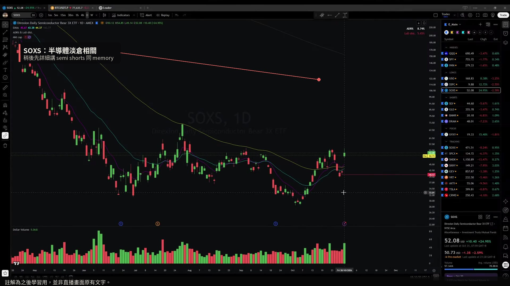
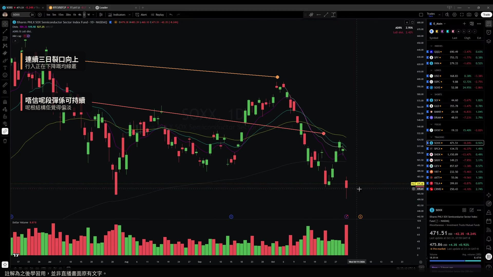
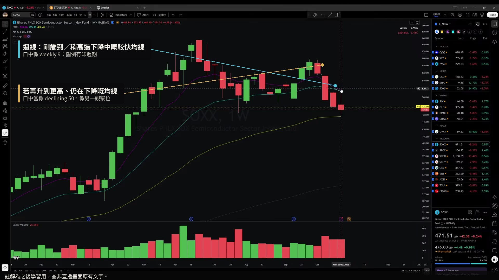

概要
反彈直上三日，行入下降均線，仍然偏淡
19:06 佢先預告稍後會講 SOXS 相關交易同 memory short。21:15 正式講半導體淡倉：週三多次試淡半導體 ETF，當日都撐住，全部失敗；但佢唔相信呢段反彈可持續，尤其係連續三日裂口向上，行入正在下降嘅均線。即使週三被停多次，週四、週五仍然在搵淡嘅入場。週線上，價格稍高過或者剛觸到下降中嘅 weekly 9；若再升到下降中嘅 50，會係另一個值得留意、甚至再淡嘅位置。佢覺得當時呢根結構偏淡，亦話淡反彈係提高風險回報嘅做法。
字幕把 SOXS 聽成 “exo excess”；週線 9、50 嘅週期圖例冇印，只依口中講法同均線位置來讀。
圖一 · 預告
SOXS：稍後會講嘅半導體淡倉相關
直播 19:10

原話
Yeah, the SOXS trade and also this memory short. I think that's a really interesting story that I'll share in a couple of minutes.
係呀，SOXS 呢單，同埋呢單 memory short。我覺得呢個故仔幾有意思，等陣會講。
YouTube 字幕寫成 “exo excess trait”；畫面代碼係 SOXS。memory short 稍後以 DRAM 一科詳細拆。
點樣讀
呢幅只係預告。詳細結構用下面 SOXX 日線同週線來讀。
圖二 · 主圖
SOXX 日線：三日裂口向上，行入下降均線
直播 23:30

原話
Let's talk about the semi shorts first. And yeah, on Wednesday, I keep trying to short the semi ETF, but all of the attempts failed. It's holding up pretty well during the day, but I'm not convinced this bounce is going to be sustainable, especially it's like going straight up in three days, three consecutive gap ups into the declining EMAs. So even though I got stopped out a few times on Wednesday, I still, I'm looking for the potential short entry on Thursday or Friday.
先講半導體淡倉。週三我不斷試淡半導體 ETF，但全部失敗。當日盤中撐得幾好，不過我唔相信呢段反彈會持續，尤其係三日直上、連續三個裂口向上，行入正在下降嘅均線。所以即使週三被停多次，我仍然在搵週四或者週五嘅潛在淡倉入場。
點樣讀
重點係「直上三日、裂口進入下降均線」，而唔係單一次盤中反彈。佢承認週三失敗，但計劃冇改。
後面周四點樣等彈入缺口，見下一科。呢度先讀大結構。
圖三
週線剛觸到下降 9；再上或可見下降 50
直播 22:40

原話
And on Thursday it's also like getting a little bit higher than the declining nine, or maybe it is slightly above or just touching the declining nine, the weekly nine EMA. So to me, I think if it can go further higher to the declining 50, I think it will be another really good short entry, or like a level to watch and to potentially catch the reversal, on the daily and also on the weekly as well. So this candle right now, I think it really favors the short side. And shortening the bounces is just the way that you can maximize your risk-reward.
週四亦有少少高過呢條下降中嘅 9，或者只係稍為高過、剛觸到下降中嘅 9，即係週線 9 EMA。對我嚟講，若再升到下降中嘅 50，會係另一個好好嘅淡倉入場，或者一個值得睇、有機會捉轉勢嘅位置，日線同週線都係。所以而家呢根，我覺得相當偏淡。淡反彈，就係可以盡量提高風險回報嘅做法。
點樣讀
圖例冇印 9 或者 50。註解只把口中嘅 weekly 9 指去較快、正在下降、價格剛觸到嘅均線，把口中嘅 50 指去更高、仍在下降嘅均線，唔寫死邊一條一定係邊個週期。
「淡反彈提高風險回報」係原話，唔好當成可複製嘅規則。
附註
注意事項
- YouTube 把 SOXS 聽成 “exo excess trait”。本站按畫面更正，並在該圖附註。
- 圖例冇印均線週期。9 同 50 係口中講法。
- 畫面睇唔到成交價、倉位大細或者損益，所以唔寫死呢啲數字。被停多次只保留原話。